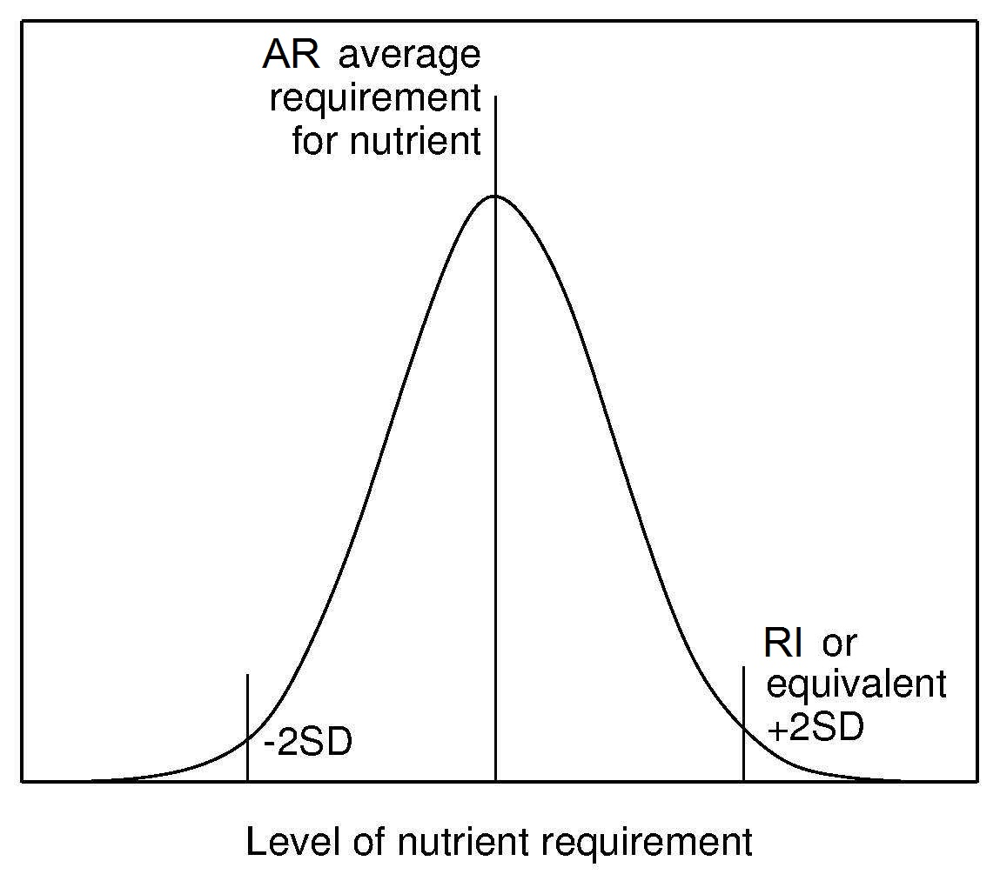

Figure 8a.6: Average requirement (AR) for a nutrient. The nutrient requirements are defined in relation to a frequency distribution of individual requirements. RI or the equivalent is defined as two standard deviations above the AR.